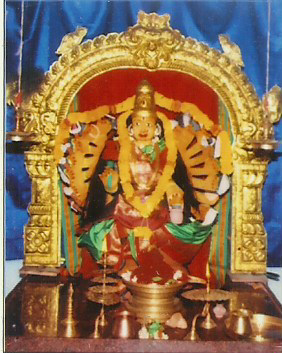
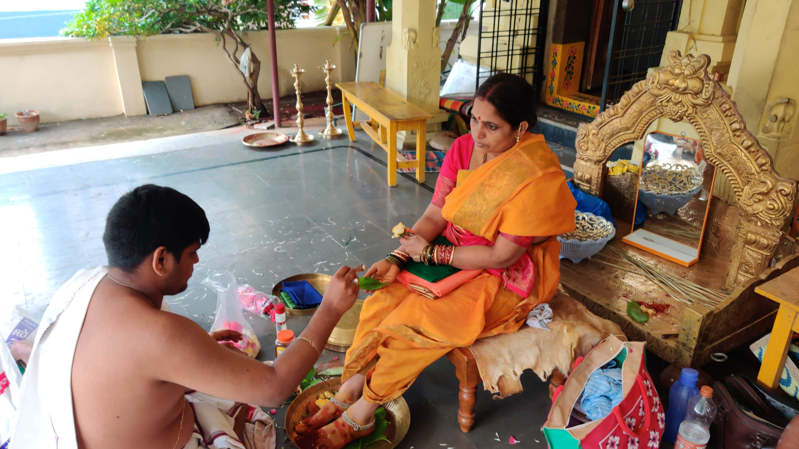

Our Temple

Asta dasa bugi maha lakshmi is a vibrant and active congregation that offers a religious, social and educational framework for the local Hindu community.Established in 1997, the Synagogue was established on the ideals of giving everyone a chance to learn, grow and define their own Hinduism. Contact us today and find out how you can be a part of our welcoming community.

Mrs. Seetha Maha Lsakshmi
Chair Person
Maha Lakshmi has been a part of our community for many years and is committed in providing members with cutting edge facilities at temple so their experience is enjoyable.